ICC Tasks Collection File
Provides instructions regarding how to remove, clean, or replace the body coil and patient blower air filters.
Prerequisites
Procedure
- Release the bands from the shipping base, flip the side plate down, and roll out the FRU box.
- Open the ICC front doors far enough to remove the cooling unit.note: The front doors can also be removed if there is not enough space to open it all the way. Disconnect the ground wire and lift the door up off the hinges and away from the cabinet.
- Make sure the hoist is installed. Refer to Installing the hoist.The hoist beam is stored on top of the ISC cabinet. It is secured in place with two captive fasteners.
Figure 1. Hoist beam storage location (ISC)
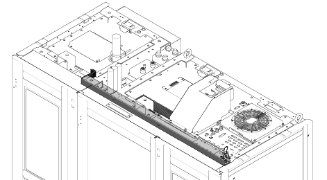
- Return the ICC control unit back to its original position and secure it in place with the retaining screws previously removed.
- Prepare a 20L draining tank and a draining hose with a quick disconnect (supplied with the ICC).
- Insert the quick disconnect to the pump drain valve.Once connected, the valve inside will open automatically and the tank will start to drain.
- Repeat for the dirt trap drain valve and the heat exchanger drain valve.
- Hook the winch from the hoist kit to the hoist bracket.note: Make sure the hook is seated in the hoist bracket. If not, the weight can shift causing harm to the equipment or engineer.
- Ratchet the winch to slightly tighten the chain just enough to take the weight off of the slide rails.
- Press the release tabs in on each side and push the outer slide rail back into the ICC.
Figure 2. Rail slide release tabs
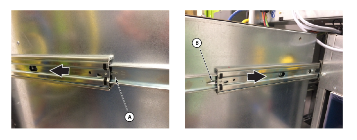
A Release tab (left) B Release tab (right) note: Make sure the outer slide rails are completely inside the cabinet before lowering the cooling unit. - Line up the slide rails and insert one into the other until they click into place.note: Slightly push the outer slide rails back (towards the ICC) to make sure they are securely attached.
Figure 3. Slide rail check
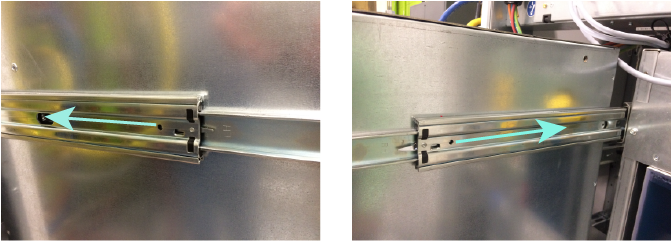
- Carefully take tension off the winch to loosen and unhook the chain.
- Disassemble the hoist kit and return it to the storage location. Refer to Removing the hoist.
- Locate the facility plumbing unit (FPU) at the bottom right corner of the ICC.
Figure 4. Facility plumbing unit
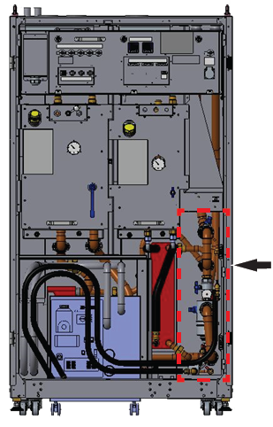
- Close both the facility supply and return valves using the blue handles.
Figure 5. Facility plumbing unit water return valves
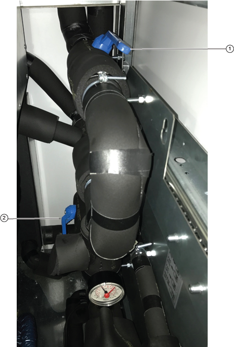
1 Facility water return valve 2 Facility water supply valve - Close the small black valve from the top of the FPU, for the cryocooler compressor water supply lines.
- Disconnect the FPU sensor cable connector coming from the XJ33 on the ICC control unit. Make sure the FPU sensor cable is out of the way before removing the FPU.
Figure 6. FPU sensor cable
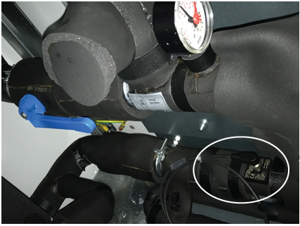
- Remove the MS5 A5 water flow sensor cable from the cryocooler compressor and move it away from the FPU removal.
Figure 7. MS5 A5 water flow sensor cable
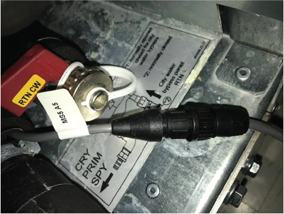
- Drain the ICC primary water circuit into a 20L draining tank.note: The water/glycol mixture must be filled into an approved container and be disposed of properly or reused.
Figure 8. Facility plumbing unit drain, city water supply, and return valves
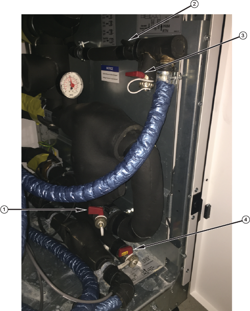
1 Drain valve 2 Cryocooler compressor water return valve 3 City water supply valve 4 City water return valve - Connect one end of the draining hose to the drain valve.
- Insert the other end of the draining hose into the 20L draining tank and open the drain valve.
- Open the city water supply valve.note: Leave the city water supply valve open.
- Open the cryocooler compressor water return valve slightly to allow the air into the circuit. Use a towel at the city water supply valve to collect any water leakage.
- When the coolant has finished draining from the drain valve, disconnect the draining hose and connect it to the city water return valve.
- Open the city water return valve.
- Drain the coolant from the cryocooler compressor lines. Refer to Draining coolant from cryocooler compressor water lines.
- Remove the insulations, supply and return connections, and hoses from the FPU, listed below:
Figure 9. Facility plumbing unit connections
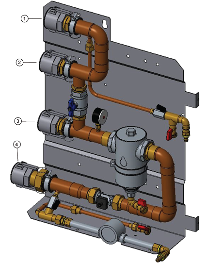
1 Facility water return 2 Heat exchanger return 3 Facility water supply 4 Heat exchanger supply - Positioning
- Position the crate with a minimum of 4 ft of clearance behind the crate and 14 ft of clearance in front of the crate.

 warning
warning
note: Weight of ICC is 1,235 lbs (560 kg). - Remove the eight screws from the bottom of the front panel.note: The screws that you need to remove are marked in red on the crate.
- On the left side panel, remove the six upper screws along the front edge.
- On the right side panel, remove the six upper screws along the front edge.
- With an assistant holding the front panel in place, remove the eight screws from the top of the front panel.
- Remove the front panel and lay it on the floor, front side down, in front of the crate.
- Remove the screw from the folding subpanel that is located at the bottom of the front panel.
Figure 10. Folding subpanel
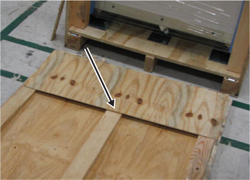
- Lift the subpanel away from the front panel, extending it from the end of the front panel.
- Turn the front panel over, making it into a ramp for the cabinet. The subpanel should still extend out from the end of the ramp.
Figure 11. Cabinet ramp
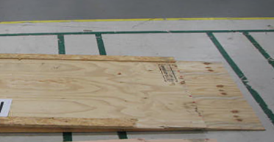
- Engage the two hooks on the opposite end of the ramp with the two brackets on the crate base.
Figure 12. Crate hook (left) and ramp hook (right)
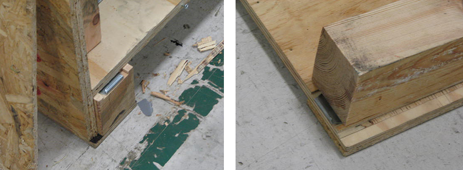
- Make sure the ramp is secure and flush with the base.
Figure 13. Cabinet ramp and crate base
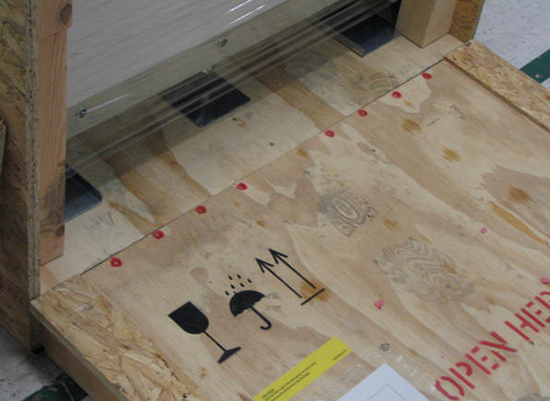
- Remove the six screws from the lower front edge of the left panel to release the left wooden brace that holds the cabinet. Remove and discard the brace.
- Remove the six screws from the lower front edge of the right panel to release the right wooden brace that holds the cabinet. Remove and discard the brace.
- Remove the eight screws from the bottom of the left panel.
- Remove the eight screws from the bottom of the right panel.
- Remove the eight screws from the bottom of the rear panel.
- Pull the two webbed handles on the rear of the crate until the crate clears the cabinet and crate base.
Figure 14. Crate webbed handles
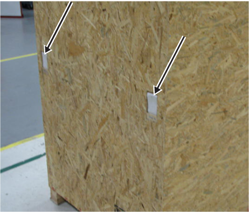
- With a minimum of two people, roll the cabinet straight down the ramp.
- Break down and discard the crate.
- Remove the wrapper, shipping tape, and protective foam from the cabinet.
- Cleaning/Replacing the Air FilterCleaning or replacing the ICC air filters
- Visually check the air filter. If cleaning or replacement is required, perform the following procedure.
- Apply ISC LOTO. See Applying LOTO - ISC.
- Loosen the air filter clamp and remove the air filter.
Figure 15. ICC air filter removal
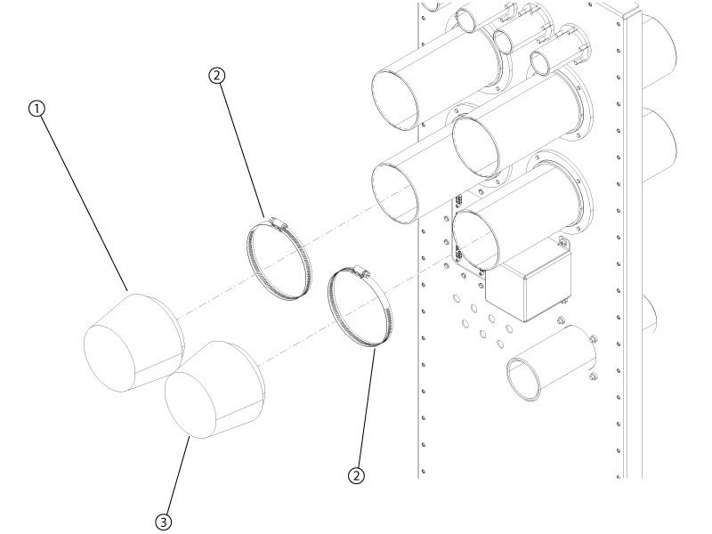
1 J105 Body coil blower air filter 2 Clamp 3 J103 Patient blower air filter - If needed, clean the filter outside of the magnet room.
- Install the new or clean air filter following the reverse order of removal.
- Turn on the ISC power. See Removing LOTO - ISC.
- Do a check scan. See Doing a check scan.
- Do a check scan. See Doing a check scan.
Finalization
- Restore the power. See Removing LOTO - ISC.
- Perform a check scan. See Doing a check scan.
1 Starter ICC
Procedure
- Unplug the control box by release bolt.
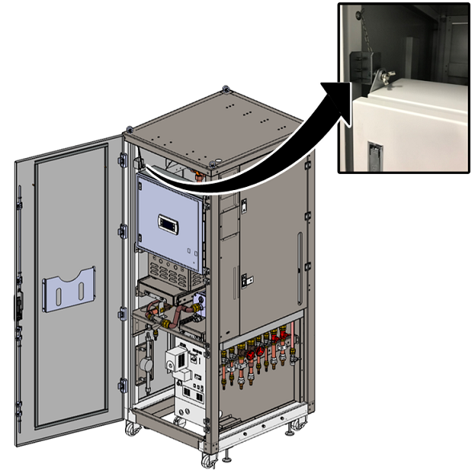
- Restore the control box and plug the bolt.
- Open the side panel.
- Close the six valves.
Figure 16. Valves on ICC